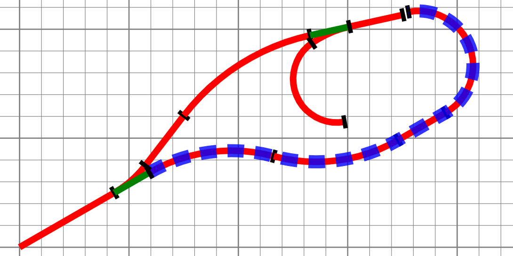
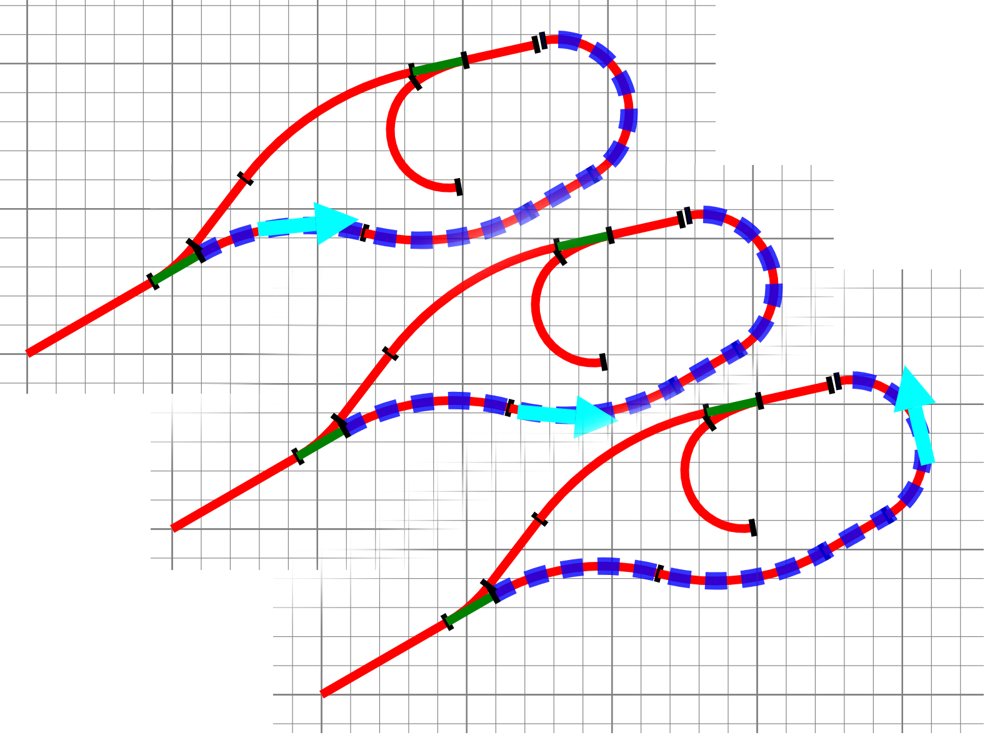
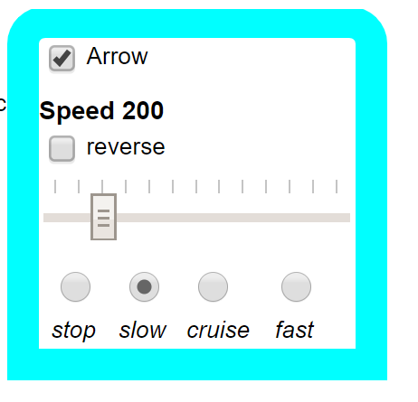
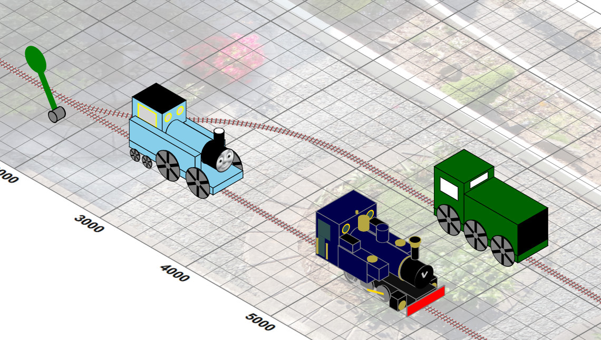
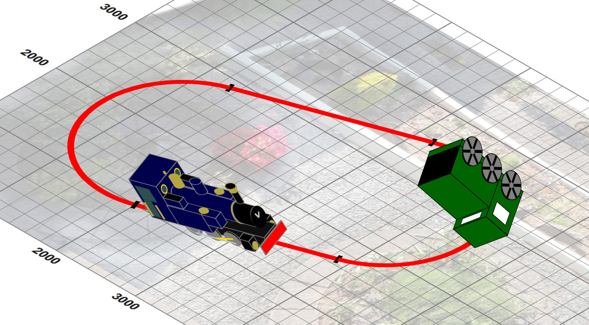

Animations
SVG supports animations based on SMIL event-driven models. Of particular interest in this case is the use of
path-based animation where a given SVG group can be successively translated along a given path. As trains move
along tracks, and in our design tracks are defined by sections from which SVG path definitions can be constructed easily, we
should be able to simulate the movement of trains around our tracks. And so it proved.
The basic animation we used is effectively “move this group g along this path p in a
duration of dur seconds.” For each section of the layout (i.e. a contiguous run of straight and curves, or
the set and not set short sections of points), we calculate both a path description (the
d property of svg:path) and the total length. For example the dashed blue line is the defined
(single) path for the section2 track section, for which a total length of 4,256 has been calculated :
Figure 16. A track section path
|  |
Assuming we wish our “train” to run at 100mm/s (a scale speed of ~ 7km/hr, i.e. a brisk walking pace), then the animation
should take 42.5 seconds. This is achieved by forming up an svg:animateMotion definition element:
<animateMotion xmlns="http://www.w3.org/2000/svg" id="train.animation" xlink:href="#train"begin="indefinite" fill="freeze" repeatCount="1"
calcMode="linear" keyTimes="0;1" keyPoints="0;1"
rotate="auto"
dur="42.5" onend="eventEnded('train;section2.trail')
> <mpath xlink:href="#section2.path"
/> </animateMotion>
| The graphics group that will be subject to the animation |
| Conditions for the start of the animation — in this case the animation waits until it is triggered explicitly. When the animation has finished freeze the graphics state, i.e leave the graphics translated to the end of the path and do not repeat. |
|
|
|
|
| When the animation completes the global function |
| A reference to the path to be followed. |
The animation is started by invoking the beginElement() function method of the animation element through a minimal global
JavaScript function. Thus our “train”(in this case a cyan arrow) progresses along section2 as
below:
Figure 17. Movement along a track section.
|  |
When the animation finishes, the onend statement is invoked, which is fielded by the global JavaScript function
eventEnded().
var ignoreEvent = false;
function eventEnded(e) {
if(!ignoreEvent) {
var event = new Event("change",{"bubbles":true});
var store = this.document.getElementById("event");
store.value = e;
store.dispatchEvent(event);
}
ignoreEvent = false;
}
| There are cases (described below) when we need to ignore an end event temporarily. |
| A (hidden) checkbox element in the DOM tree that is used to hold the event information as its |
| Propogating an event that the value of the event information store has changed. |
After this function has executed, the checkbox id('event') receives a change event which is caught by
an XSLT template:
<xsl:template match="*:input[@id eq 'event']" mode="ixsl:onchange">
<xsl:variable name="layout" as="map(*)"
select="$layouts(f:radioValue('layouts', .))"/>
<xsl:variable name="parts" select="tokenize(@value, ';')"/>
<xsl:choose>
<xsl:when test="exists($parts[3])">
<!-- There is a new section to enter -->
<xsl:call-template name="runTrain">
<xsl:with-param name="engine" select="$parts[1]"/>
<xsl:with-param name="trackComponentID" select="$parts[3]"/>
<xsl:with-param name="tracks" select="$layout?tracks"/>
</xsl:call-template>
</xsl:when>
<xsl:otherwise>
<!-- There is a no new section to enter - end of the line -->
<xsl:for-each select="id($parts[1])">
<ixsl:set-attribute name="position" select="$parts[2]"/>
</xsl:for-each>
<xsl:variable name="engine" select="$parts[1]"/>
<xsl:call-template name="stopEngine">
<xsl:with-param name="engine" select="$engine"/>
</xsl:call-template>
<xsl:call-template name="reverseEngine">
<xsl:with-param name="engine" select="$engine"/>
</xsl:call-template>
</xsl:otherwise>
</xsl:choose>
</xsl:template>
| There are a number of possible layouts, held as a named map global variable. Which is the active one is determined by the value of the layouts radio button set. |
| This template expects the value of the |
| If there is a next port, then the train is run on that new section from that port, on the current layout. |
| If not then the train is assumed to have reached the end of the line. It is stopped and the direction reversed, so that, as a convenience to the driver, “opening the throttle again” again will cause the train to move back along the section. |
The trains are controlled by a simple interactive XHTML control group (obviously of class cab):
Figure 18. The Engine Cab
|  |
<div id="Arrow.cab" class="cab arrow">
<div class="toggler">
<input class="run" type="checkbox"
value="Arrow" />
<label class="text">Arrow</label>
</div>
<label class="title">Speed
<span class="value">0</span></label>
<div name="direction" class="direction">
<div class="toggler">
<input class="direction" type="checkbox"
value="reverse"/>
<label class="text">reverse</label>
</div>
</div>
<input type="range" min="0" max="1200"
value="0" list="tickmarks" />
<div class="radio speed">
...
<div class="toggler">
<input class="speed" type="radio"
value="200" />
<label class="text">slow</label>
</div>
...
</div>
</div>
|
Apart from selecting a locomotive to run, the only current action is to change its speed or direction of travel. A number of XSLT templates detect changes in the cab input controls such as:
<xsl:template match="input[contains-token(@class, 'speed')]"
mode="ixsl:onchange">
<xsl:variable name="cab"
select="ancestor::div[contains-token(@class, 'cab')]"/>
<xsl:variable name="run" select="$cab//input[@class eq 'run']"/>
<xsl:variable name="value" select="@value"/>
<ixsl:set-property object="$cab//input[@type eq 'range']"
name="value" select="number($value)"/>
<xsl:for-each select="$cab//span[contains-token(@class, 'value')]">
<xsl:result-document href="?." method="ixsl:replace-content">
<xsl:sequence select="string($value)"/>
</xsl:result-document>
</xsl:for-each>
<xsl:if test="ixsl:get($run,'checked')">
<xsl:variable name="engine" select="$run/@value"/>
<xsl:for-each select="id($engine)">
<ixsl:set-attribute name="speed" select="$value"/>
</xsl:for-each>
<xsl:call-template name="changeVelocity">
<xsl:with-param name="engine" select="$engine"/>
</xsl:call-template>
</xsl:if>
</xsl:template>which detects a change in the stop, slow, cruise, fast radio button set. The selected speed is the
@value of the set, which is written into a span element within the cab div and used to set the
slider to a suitable point. If the engine is running (the top left checkbox checked), then the demanded speed is written as an attribute
onto the selected engine object and then the changeVelocity template is invoked.
The key idea here is to determine how far the current animation has progressed, from which the remaining distance to travel can be determined. This is computed by a global JavaScript function with the animation object a as argument:
function animProgress(a) {
if(a.getAttribute("dur")==0 ||
a.getAttribute("dur")=="indefinite") {
return 0;
}
var startTime;
try{
startTime = a.getStartTime();
} catch(e) {
return 0;
}
var t_ratio=(a.getCurrentTime() - startTime)/a.getSimpleDuration();
return t_ratio;
} which calculates the ratio of elapsed to total animation duration. In cases where the animation is not active (for which I can't find a
simple test), the exception on finding start time is caught. Given the remaining distance and desired speed, a new duration can be
determined and the animation restarted using the keyPoints property to start somewhere down the animation path, e.g.
keyPoints="0.5;1" would be used for a speed change halfway along the track section[21].
The animation is restarted by invoking the beginElement() method — the ignoreEvent flag is used to prevent the
implicit endElement() event, triggered before the restart, that would normally be used to signal completion of traversal of a
section, propagating to the XSLT templates. In the case that the locomotive is running in reverse, the key points are reversed, e.g.
keyPoints="0.66;0" would be used for a speed change one-third of the way backwards through a section.
In the absence of such speed changes a running locomotive involves animation movement along the current section until the end event is executed, fielded by the XSLT template shown earlier, which then starts animation along the next specified section. In the case of entering points, the state of the point is examined (from the status of the point control in the signal box!) and the correct path and next section determined for the animation[22]. When a locomotive enters a swap section, described above, its internal running in the wrong direction flag is inverted and it passes on to the following section.
A small number off other animation effects have been added. Firstly locomotives have wheels, which can be animated to rotate at a rate and direction suitable for their diameter and the locomotive's speed, using the animation element:
<animateTransform type="rotate" begin="indefinite" attributeName="transform" from="0" to="360" dur="…." attributeType="XML" repeatCount="indefinite"/>
Secondly, locomotives can be given running sound effects by invoking play() method on an audio element when
they start movement, and can“whistle” when they enter a (zero length) whistle pseudo-track section. The
end point of this development was a case where multiple engines could be run on a layout, stopping, starting , reversing and changing
their speed independently and altering points to move them to different sections of the layout:
Figure 19. Three engines running simultaneously
|  |
But there is a problem with the isometric view “trick” and automatic path tangent rotation:
Figure 20. On the ceiling
|  |
The animation rotation transformation is applied before the isometric projection and our 3D trick no longer works with significant rotations. How this may be overcome is discussed in the next section.
[21] The current animation may itself already involve a “partial” path, as a consequence of a previous change in speed —
this is determined from the existing @keyPoints value on the animateMotion element to determine the
“distance to go”.
[22] Changing a point while a locomotive is moving through it will not effect the locomotive's path.